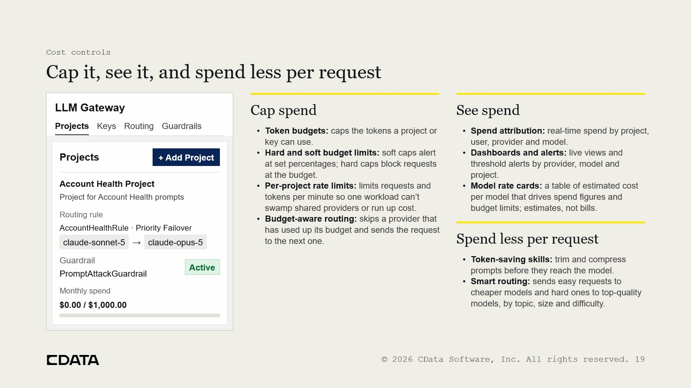
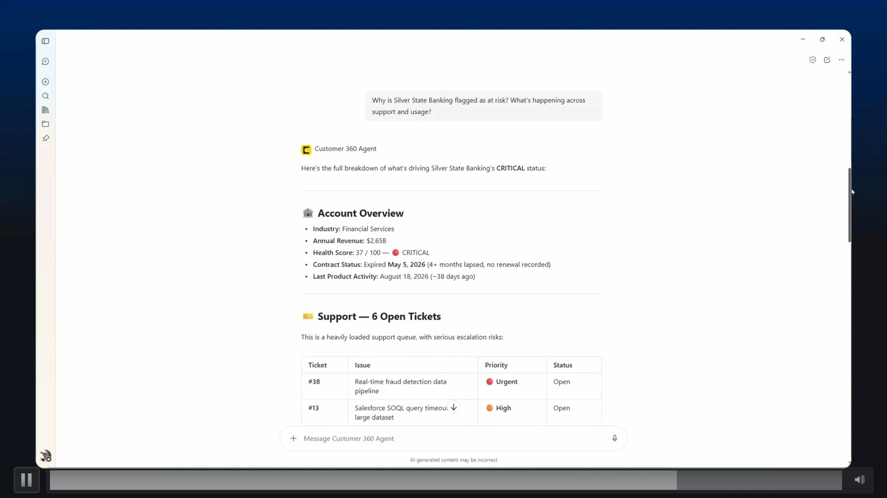
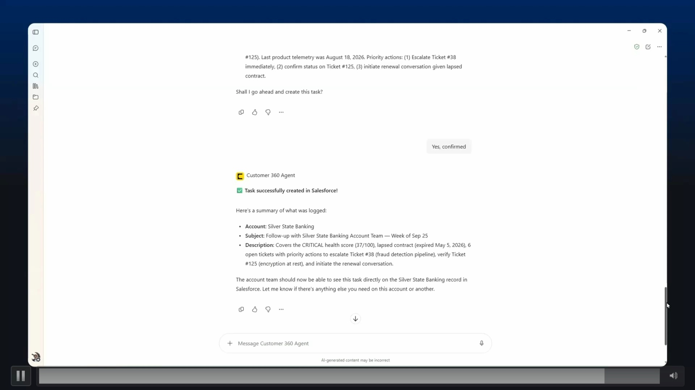
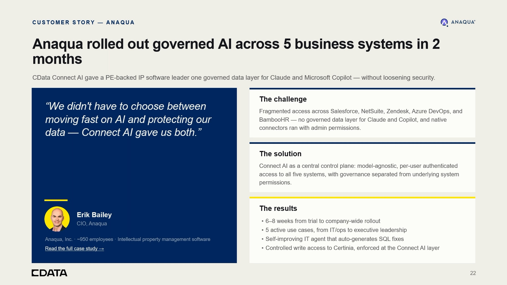

THRSP1119 官方课件实拍 · Slide 19
LLM Gateway 项目级预算封顶、模型容灾路由与防注入护栏
实拍展示为客服团队创建的 Account Health Project：配置 claude-sonnet-5 至 claude-opus-5 优先级故障切换路由、启用 PromptAttackGuardrail 防护，并将月度开销硬性封顶于 $1,000.00 [1]。
企业智能体一旦走出 Microsoft 365 与 Dataverse 边界，往往撞上跨系统语义断层、管理员高危共享凭据与失控词元账单三重阻力 [1][2]。在 Microsoft Ignite 2026 专场 THRSP1119 中，CData 现场首席技术官 Rahul Pahuja 拆解了 CData Connect AI Gateway 如何承接 Power BI 语义模型与 Agent 365 边界，为 Copilot Studio 智能体打通覆盖超 350 类外部记录系统的每用户鉴权读取、人工确认回写与全链路审计闭环 [1][2]。
$0.16 降至 $0.01 [1][3]
01 / Beyond the Microsoft Estate
企业在 Copilot Studio 中构建业务智能体时，微软生态内部的一体化底座已相当完备：Work IQ 为 Microsoft 365 文档、沟通脉络与 Dataverse 提供原生组织上下文，Agent 365 则集中接管智能体的注册发现、安全姿态与运行可观测性 [1][2]。真正的摩擦出现在智能体迈出微软版图的那一刻。真实生产流程几乎总是横跨 SAP、Salesforce、Zendesk、ServiceNow、NetSuite 与 Snowflake 等外部异构记录系统；若仅停留在智能体入口层做审批，底层连接器一旦退回共享管理员账号或裸露全量库表，越权读取与误写事故便难以避免 [1][2]。
Rahul Pahuja 在开场直接给出了破局原则：治理绝不能止步于智能体层，必须一路向下延伸至外部数据层与单条业务记录 [1]。作为 Copilot Studio 内置的官方认证连接器，CData Connect AI Gateway 允许制作者直接通过标准每用户 OAuth 流程接入网关，即插即用调用历经十余年企业级打磨的 350 余款实时读写连接器，覆盖主流客户关系、企业资源计划、财务人力及云端数仓 [1][2]。
在这座连接“微软内部生态”与“外部异构系统”的单一网关内部，四项核心能力协同运转 [1][2]：最上方是支持自带模型的路由与预算网关，可按策略分发至闭源旗舰模型或开放权重模型；中间是执行身份透传与策略校验的集中控制面，以及吸收外部业务口径的 Context Engine（上下文引擎）；最下方则是支持实时双向读写的虚拟数据层 [1][2]。下方交互导览台集成了 THRSP1119 官方 19 分钟点播视频流、官方字幕讲稿直链与五个核心章节的逐分钟索引 [1]：
按时间轴切换架构解析、CData Labs 三项定量研究、网关预算控制、Silver State Banking 实机演示与 Anaqua 案例，支持页内直接加载官方点播播放器。
02 / CData Labs Quantitative Studies
要让企业放心把智能体推向全员生产，既要答得准，又要把单次推理成本压进可控区间——即同时做到“每次请求少花词元”与“每个词元单价更低” [1][3]。Rahul Pahuja 在现场公布了 CData Labs 围绕跨源企业查询开展的三项对照基准测试，测试任务要求智能体同时横跨 Salesforce（客户与商机）、Zendesk（售后工单）与 Snowflake（产品使用遥测），回答诸如“找出健康状况恶化且使用量下滑的高优客户”等高复杂度关联问题 [1][3]。
第一项 准确率差距研究（The 25% Accuracy Gap）将 CData 统一平台与集成平台即服务、客户关系管理原生接口及数仓提供商的同类连接服务同台对比 [1][3]。实测显示，其他服务商的回答准确率停留在 65%–75% 区间，而 CData Connect AI 达到了 98.5%，领先幅度约 25 个百分点 [1][3]。差距根源在于：当查询涉及多表过滤、跨系统主键关联或特定字段的枚举值业务含义时，普通接口仅返回裸字段名，迫使大模型盲猜；而 CData 的连接层原生感知表结构与枚举语义，并由内置数据处理引擎在服务端直接完成跨源联合计算 [1][3]。
$0.16 降至 $0.01（降幅 93.8%，跨模型成本比达 178 倍）；在同模型概率路由测试中将单次词元消耗从 914K 削减至 87K（节省 93%），任务正确率从 36% 跃升至 83% [1][3]。第二项 178 倍成本跨度研究（The 178x Cost Spread）验证了“确定性架构杠杆”对模型选型的解放作用 [1][3]。团队在网关内预先构建了横跨 Salesforce、Zendesk 与 Snowflake 三套系统的预连接 派生视图（Derived Views）与专用领域工具，将繁重的关联聚合卸载至数据处理引擎确定性执行 [1][3]。结果显示，即便是轻量的开放权重模型 Mistral Small，也能产出与昂贵前沿大模型完全一致的准确答案，跨模型单次成本跨度高达 178 倍，实测单次查询开销从 $0.16 直接压降至 $0.01——模型选型从此简化为纯粹的成本与延迟权衡 [1][3]。
第三项 93% 词元节省研究（The 93% Token Savings）则固定使用同一款大模型，纯粹考察开放式概率探索路径下的词元损耗 [1][3]。面对相同业务背景，传统连接网关每次运行平均消耗 914K 词元，且任务正确率仅为 36%；切换至配备按需上下文注入与服务端计算的 Connect AI Gateway 后，单次消耗骤降至 87K 词元（整整节省 93%），工具调用次数缩减至原先的 1/10，而任务完成正确率反而大幅攀升至 83% [1][3]。
03 / Prompt Lifecycle & LLM FinOps
为什么同一套架构能兼顾高准确率与严苛合规？Rahul Pahuja 用“一条提示词的六步生命周期（Life of a Prompt）”拆解了网关从前门到源端的逐跳控制机制 [1]：
业务用户在 Copilot Studio 智能体界面发起自然语言提问，智能体通过每用户 OAuth 令牌向网关透传当前调用者的真实企业身份，杜绝共用后台特权账号 [1]。
请求率先抵达网关层，按预设项目规则匹配目标大模型与工具集，同时实时校验词元速率限制、项目剩余预算及提示词注入风险 [1]。
集中治理面解析该用户名下获批访问的连接凭据与受控工作区策略，明确界定本次会话“允许读哪些对象、能否执行回写” [1]。
上下文引擎按需注入关联表结构、Power BI / dbt 指标口径与枚举字典，确保模型在发起工具调用前准确理解每个字段与数值的业务定义 [1]。
虚拟数据层携带调用者自身权限下沉至外部业务系统执行实时跨源读取或受控写入，不绕过源端原有行级与对象级访问控制 [1]。
经真实数据锚定的答复返回给智能体，沿途每一次模型推理、工具调用与底层查询均写入集中审计日志并支持实时推送安全运营中心 [1]。
在企业尤为关心的成本治理面板（LLM Gateway）中，管理员围绕“封顶（Cap spend）、看清（See spend）、单次省钱（Spend less per request）”构建三道防线 [1]。系统支持为每个业务项目或密钥设定词元预算与每分钟请求/词元速率上限，防止失控循环拖垮共享配额；软上限按百分比触发告警，硬上限则在触线瞬间阻断请求或通过预算感知路由自动切往备用模型供应商 [1]。

实拍展示为客服团队创建的 Account Health Project：配置 claude-sonnet-5 至 claude-opus-5 优先级故障切换路由、启用 PromptAttackGuardrail 防护，并将月度开销硬性封顶于 $1,000.00 [1]。
如上方官方课件第 19 页实拍所示，演示团队为客户体验部门专门设立了 Account Health Project，配置 AccountHealthRule 优先级故障转移策略（主用 claude-sonnet-5，异常时无缝切换至 claude-opus-5），开启主动防提示词攻击护栏（PromptAttackGuardrail），并将该用户群的月度总支出上限锁定为 $1,000.00；同时配合词元压缩技能与按题目难度分流的智能路由，在推理前自动瘦身提示词体积 [1]。
04 / Live Demo: Account Health & Governed Write
进入全场核心实机演示环节，Rahul Pahuja 展示了如何将传统静态的 Power BI 客服工单看板升级为具备跨源推理与受控行动力的 Copilot Studio Customer 360 Agent [1]。演示从 Context Editor（上下文编辑器）起步：团队无需在每套聊天工具里从零手写业务规则，而是直接导入现成的 Power BI（PBIX）语义模型、dbt 模型或 Snowflake 语义视图 [1][2]。向导自动扫描 Snowflake 底层表结构并生成一份结构清晰的 Markdown 语义文档（辅以平台内建的客户健康度业务词汇表），数据工程师可随时在线审阅修订，并通过 search_context 工具供智能体按需检索 [1]。
紧接着，团队通过 Toolkits（受控工具包）与 Virtual Schemas（虚拟模式）严格收敛暴露给 Copilot Studio 的操作表面积 [1]。该工具包没有向大模型敞开数百张原始表，而是仅勾选暴露与客户健康度强相关的少量虚拟对象（Salesforce 客户与商机、Zendesk 工单、Snowflake 同步遥测）并逐项设定增删改查（CRUD）权限，最终向 Copilot Studio 精准映射出 4 个专用领域工具：get_account_health_score、get_account_health_signals、get_account_details 以及唯一具备写权限的 create_salesforce_task [1]。

跨 Salesforce、Zendesk 与 Snowflake 实时汇总 Silver State Banking（年营收 $2.65B）：健康分 37/100（低于阈值 40）、合同于 2026-05-05 逾期超 4 个月、末次产品活跃停留在 8 月 18 日，且积压 #38 实时反欺诈管线等 6 张高危工单 [1]。

因健康分低于 40 分阈值，智能体主动列出三项优先处置建议并请求人工批准；用户输入 Yes, confirmed 后，通过受控写工具在 Salesforce 客户记录下创建跟进任务且全链路落盘可查 [1]。
当演示者在 Copilot Studio 测试窗询问“为什么 Silver State Banking 被标为风险账户？售后与产品使用侧发生了什么？”时，智能体依次调用受控工具，当场输出有据可查的全景诊断 [1]。该金融服务客户年营收达 $2.65B，当前综合健康分跌至 37 / 100（CRITICAL 危急，低于 40 分预警线）；合同已于 2026 年 5 月 5 日 到期（逾期逾 4 个月未续签），Snowflake 末次产品遥测停留在 2026 年 8 月 18 日（静默约 38 天）[1]。售后队列更是积压了 6 张未结工单，包括紧急优先级的 #38 实时反欺诈数据管线故障、高优先级的 #13 大数据集查询超时以及静态加密相关的 #125 工单 [1]。
由于健康分跌破 40 分阈值，智能体自动拟定三步处置方案（立即升级 #38 工单、核实 #125 加密工单进展、重启逾期合同续约谈判），并在执行写入前主动停顿询问：“是否允许立即创建该跟进任务？” [1]。待业务代表明确回复 Yes, confirmed 后，智能体方才调用 create_salesforce_task 将主题为 Follow-up with Silver State Banking Account Team - Week of Sep 25 的任务精准写入 Salesforce 对应客户档案；与此同时，Connect AI 后台的查询日志、审计日志、大模型日志与工具日志完整记录了调用者邮箱、执行耗时（如 Snowflake 查询 3694 ms）及受影响记录，支持实时流式对接企业安全审计平台 [1]。
05 / Customer Case Study: Anaqua
演讲收尾阶段，Rahul Pahuja 分享了知识产权管理软件领军企业 Anaqua（员工规模约 950 人）的真实生产落地案例 [1][4]。在引入集中网关前，Anaqua 内部同时存在使用 Claude 与 Microsoft Copilot Studio 的异构用户群，业务数据分散在 Salesforce、NetSuite、Zendesk、Azure DevOps 与 BambooHR 五套核心系统中；更棘手的是，原有原生连接器普遍以管理员高权限运行，安全团队无法在不牺牲数据隔离的前提下放行大规模使用 [1][4]。

Anaqua 首席信息官 Erik Bailey 评价：“我们不必在快速推进 AI 与保护核心数据之间二选一——Connect AI 让我们两者兼得。”团队实现 5 大活跃业务场景投产与对 Certinia 的受控写入 [1][4]。
通过将 CData Connect AI 部署为跨模型中央控制平面，Anaqua 实现了与底层系统静态管理员权限解耦的每用户实名认证访问 [1][4]。团队仅用 6–8 周（约 2 个月）便完成了从概念验证（POC）到全公司范围的正式投产，同步跑通从 IT 运维到高管决策的 5 个活跃生产场景——其中不仅包含能够自主生成 SQL 修复脚本的自进化 IT 运维智能体，还在网关层严格执行了对专业服务自动化系统 Certinia 的受控回写 [1][4]。下表总结了企业在架构设计与落地阶段可直接复用的四项核心控制杠杆 [1][2]：
| 架构控制维度 | 传统直连痛点 | THRSP1119 受控网关方案 | 实测工程收益 |
|---|---|---|---|
| 跨生态业务语义 | 业务定义锁死在单一报表工具，大模型盲猜枚举与关联键 [1] | 导入 Power BI PBIX、dbt 与 Snowflake 视图生成集中可编辑 Markdown 上下文 [1][2] | 跨源查询准确率提升至 98.5%（领先约 25 个百分点）[1][3] |
| 跨源计算与模型路由 | 将海量原始表行塞入上下文窗口，依赖昂贵旗舰模型硬算 [1][3] | 在服务端构建跨源预连接派生视图（Derived Views）与优先级故障转移路由 [1][3] | 178 倍成本跨度（单次 $0.16 → $0.01），节省 93% 词元 [1][3] |
| 智能体写入权限边界 | 原生连接器共用管理员凭据，暴露全量表增删改风险 [1][4] | 每用户 OAuth 鉴权 + Scoped Toolkits 收敛工具面 + 人工确认后执行受控回写 [1] | 安全执行 Salesforce 跟进任务与 Certinia 生产回写 [1][4] |
| 预算刹车与合规审计 | 缺乏部门级费用归因，外部工具调用脱离安全运营中心视野 [1] | 项目级月度硬上限（如 $1,000）+ 四维日志实时流式推送 SIEM [1] |
Anaqua 跨 5 套系统 6–8 周通过安全审查全面投产 [1][4] |
正如 Rahul Pahuja 在总结中所言，真正高性价比且受控的企业 AI 不必建立在推倒重来的定制工程之上：把分散在各业务孤岛里的语义模型收拢进统一的上下文引擎，用收敛工具包与每用户身份管住读写边界，Copilot Studio 智能体就能在确保端到端可审计的前提下，安全、经济地触达企业全量核心业务数据 [1][2]。
06 / References: Official Primary Sources & Benchmark Studies
https://medius.microsoft.com/video/asset/Caption/8d8bbc36-b706-41d9-890f-d4e29210bbcd）